Introduction
Vision is a perceptual channel that accepts a stimulus and reports some representation of the
world. Most agents that use vision use passive sensing—they do not need to send out light
to see. In contrast, active sensing involves sending out a signal such as radar or ultrasound,
and sensing a reflection. Examples of agents that use active sensing include bats (ultrasound),
dolphins (sound), abyssal fishes (light), and some robots (light, sound, radar). To understand
a perceptual channel, one must study both the physical and statistical phenomena that occur
in sensing and what the perceptual process should produce. We concentrate on vision in this
chapter, but robots in the real world use a variety of sensors to perceive sound, touch, distance,
temperature, global position, and acceleration.A feature is a number obtained by applying simple computations to an image. Very use-
ful information can be obtained directly from features. The wumpus agent had five sensors,
each of which extracted a single bit of information. These bits, which are features, could
be interpreted directly by the program. As another example, many flying animals compute a
simple feature that gives a good estimate of time to contact with a nearby object; this feature
can be passed directly to muscles that control steering or wings, allowing very fast changes of
direction. This feature extraction approach emphasizes simple, direct computations applied
to sensor responses.The model-based approach to vision uses two kinds of models. An object model could
be the kind of precise geometric model produced by computer aided design systems. It could
also be a vague statement about general properties of objects, for example, the claim that all
faces viewed in low resolution look approximately the same. A rendering model describes
the physical, geometric, and statistical processes that produce the stimulus from the world.
While rendering models are now sophisticated and exact, the stimulus is usually ambiguous.
A white object under low light may look like a black object under intense light. A small,
nearby object may look the same as a large, distant object. Without additional evidence,Section 27.2 Image Formation 989
we cannot tell if what we see is a toy Godzilla tearing up a toy building, or a real monster
destroying a real building.There are two main ways to manage these ambiguities. First, some interpretations are
more likely than others. For example, we can be confident that the picture doesn’t show a
real Godzilla destroying a real building, because there are no real Godzillas. Second, some
ambiguities are insignificant. For example, distant scenery may be trees or may be a flat
painted surface. For most applications, the difference is unimportant, because the objects are
far away and so we will not bump into them or interact with them soon.The two core problems of computer vision are reconstruction, where an agent builds Reconstruction
a model of the world from an image or a set of images, and recognition, where an agent Recognition
draws distinctions among the objects it encounters based on visual and other information.Both problems should be interpreted very broadly. Building a geometric model from images
is obviously reconstruction (and solutions are very valuable), but sometimes we need to build
a map of the different textures on a surface, and this is reconstruction, too. Attaching names
to objects that appear in an image is clearly recognition. Sometimes we need to answer
questions like: Is it asleep? Does it eat meat? Which end has teeth? Answering these
questions is recognition, too.The last thirty years of research have produced powerful tools and methods for addressing
these core problems. Understanding these methods requires an understanding of the processes
by which images are formed.Image Formation
Imaging distorts the appearance of objects. A picture taken looking down a long straight set
of railway tracks will suggest that the rails converge and meet. If you hold your hand in front
of your eye, you can block out the moon, even though the moon is larger than your hand (this
works with the sun too, but you could damage your eyes checking it). If you hold a book
flat in front of your face and tilt it backward and forward, it will seem to shrink and grow in. This effect is known as foreshortening (Figure 27.1). Models of these effects are
essential for building competent object recognition systems and also yield powerful cues for
reconstructing geometry.Images without lenses: The pinhole camera
Image sensors gather light scattered from objects in a scene and create a two-dimensional Scene
(2D) image. In the eye, these sensors consist of two types of cell: There are about 100 Image
million rods, which are sensitive to light at a wide range of wavelengths, and 5 million cones.Cones, which are essential for color vision, are of three main types, each of which is sensitive
to a different set of wavelengths. In cameras, the image is formed on an image plane. In film
cameras the image plane is coated with silver halides. In digital cameras, the image plane issubdivided into a grid of a few million pixels. Pixels
We refer to the whole image plane as a sensor, but each pixel is an individual tiny Sensor
sensor—usually a charge-coupled device (CCD) or complementary metal-oxide semiconduc-
tor (CMOS). Each photon arriving at the sensor produces an electrical effect, whose strength
depends on the wavelength of the photon. The output of the sensor is the sum of all these
effects in some time window, meaning that image sensors report a weighted average of the990 Chapter 27 Computer Vision
Figure 27.1 Geometry in the scene appears distorted in images. Parallel lines appear to
meet, like the railway tracks in a desolate town. Buildings that have right angles in the real
world scene have distorted angles in the image.Pinhole camera
ApertureMotion blur
Focal length
intensity of light arriving at the sensor. The average is over wavelength, direction from which
photons can arrive, time, and the area of the sensor.To see a focused image, we must ensure that all the photons arriving at a sensor come
from approximately the same spot on the object in the world. The simplest way to form a fo-
cused image is to view stationary objects with a pinhole camera, which consists of a pinhole
opening, O, at the front of a box, and an image plane at the back of the box (Figure 27.2).
The opening is called the aperture. If the pinhole is small enough, each tiny sensor in the
image plane will see only photons that come from approximately the same spot on the object,
and so the image is focused. We can form focused images of moving objects with a pinhole
camera, too, as long as the object moves only a short distance in the sensors’ time window.
Otherwise, the image of the moving object is defocused, an effect known as motion blur.
One way to manipulate the time window is to open and close the pinhole.Pinhole cameras make it easy to understand the geometric model of camera behavior
(which is more complicated—but similar—with most other imaging devices). We will use a
three-dimensional (3D) coordinate system with the origin at O, and will consider a point P
in the scene, with coordinates (X ,Y, Z). P gets projected to the point P′ in the image plane
with coordinates (x, y, z). If f is the focal length—the distance from the pinhole to the image
plane—then by similar triangles, we can derive the following equations:f
Z
f
Z
−x = X , −y = Y
⇒ x = − f X , y = − f Y .
Z
Z
Perspective
projectionThese equations define an image formation process known as perspective projection. Note
that the Z in the denominator means that the farther away an object is, the smaller its image
will be. Also, note that the minus signs mean that the image is inverted, both left–right and
up–down, compared with the scene.Perspective imaging has a number of geometric effects. Distant objects look small. Par-
allel lines converge to a point on the horizon. (Think of railway tracks, Figure 27.1.) A line
in the scene in the direction (U,V,W ) and passing through the point (X0,Y0, Z0) can be de-—
scribed as the set of points (X0 + λU,Y0 + λV, Z0 + λW ), with λ varying between ∞ and +∞.
Different choices of (X0,Y0, Z0) yield different lines parallel to one another. The projection
Section 27.2 Image Formation 991
Q
image
planeY
X
P
Z
P’
pinhole
f
Figure 27.2 Each light sensitive element at the back of a pinhole camera receives light that
passes through the pinhole from a small range of directions. If the pinhole is small enough,
the result is a focused image behind the pinhole. The process of projection means that large,
distant objects look the same as smaller, nearby objects—the point P′ in the image plane
could have come from a nearby toy tower at point P or from a distant real tower at point Q.of a point Pλ from this line onto the image plane is given by
λ
Z0 + λW
Z0 + λW
P = f X0 + λU , f Y0 + λV .
→ → — /
As λ ∞ or λ ∞, this becomes P∞ = ( f U /W, f V /W ) if W = 0. This means that two
parallel lines leaving different points in space will converge in the image—for large λ, theimage points are nearly the same, whatever the value of (X0,Y0, Z0) (again, think railway
tracks, Figure 27.1). We call P∞ the vanishing point associated with the family of straight Vanishing point
lines with direction (U,V,W ). Lines with the same direction share the same vanishing point.
Lens systems
Pinhole cameras can focus light well, but because the pinhole is small, only a little light will
get in, and the image will be dark. Over a short period of time, only a few photons will hit
each point on the sensor, so the signal at each point will be dominated by random fluctuations;
we say that a dark film image is grainy and a dark digital image is noisy; either way, the image
is of low quality.Enlarging the hole (the aperture) will make the image brighter by collecting more light
from a wider range of directions. However, with a larger aperture the light that hits a particular
point in the image plane will have come from multiple points in the real world scene, so the
image will be defocused. We need some way to refocus the image.Vertebrate eyes and modern cameras use a lens system—a single piece of transparent Lens
tissue in the eye and a system of multiple glass lens elements in a camera. In Figure 27.3 we
see that light from the tip of the candle spreads out in all directions. A camera (or an eye)
with a lens captures all the light that hits anywhere on the lens—a much larger area than a
pinhole—and focuses all that light to a single point on the image plane. Light from other parts
of the candle would similarly be gathered and focused to other points on the image plane. The
result is a brighter, less noisy, focused image.992 Chapter 27 Computer Vision
Image plane
Focal plane
Depth of field
Fovea
Visual AxisOptic Nerve
Lens
Optical Axis
Retina
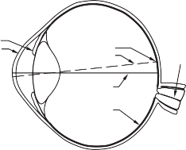
Lens
SystemIris
CorneaFigure 27.3 Lenses collect the light leaving a point in the scene (here, the tip of the candle
flame) in a range of directions, and steer all the light to arrive at a single point on the image
plane. Points in the scene near the focal plane—within the depth of field—will be focused
properly. In cameras, elements of the lens system move to change the focal plane, whereas
in the eye, the shape of the lens is changed by specialized muscles.Focal plane
Depth of fieldScaled orthographic
projectionLens systems do not focus all the light from everywhere in the real world; the lens design
restricts them to focusing light only from points that lie within a range of Z depths from the
lens. The center of this range—where focus is sharpest—is called the focal plane, and the
range of depths for which focus remains sharp enough is called the depth of field. The larger
the lens aperture (opening), the smaller the depth of field.What if you want to focus on something at a different distance? To move the focal plane,
the lens elements in a camera can move back and forth, and the lens in the eye can change
shape—but with age the eye lens tends to harden, making it less able to adjust focal distances,
and requiring many humans to augment their vision with external lens—eyeglasses.Scaled orthographic projection
The geometric effects of perspective imaging aren’t always pronounced. For example, win-
dows on a building across the street look much smaller than ones right nearby, but two win-
dows that are next to each other will have about the same size even though one is slightly
farther away. We have the option to handle the windows with a simplified model called
scaled orthographic projection, rather than perspective projection. If the depth Z of all±
points on an object fall within the range Z0 ∆Z, with ∆Z Z0, then the perspective scaling
factor f /Z can be approximated by a constant s = f /Z0. The equations for projection fromthe scene coordinates (X ,Y, Z) to the image plane become x = sX and y = sY . Foreshortening
still occurs in the scaled orthographic projection model, because it is caused by the object
tilting away from the view.Section 27.2 Image Formation 993
Light and shading
The brightness of a pixel in the image is a function of the brightness of the surface patch in
the scene that projects to the pixel. For modern cameras, this function is linear for middling
intensities of light, but has pronounced nonlinearities for darker and brighter illumination. We
will use a linear model. Image brightness is a strong, if ambiguous, cue to both the shape and
the identity of objects. The ambiguity occurs because there are three factors that contribute
to the amount of light that comes from a point on an object to the image: the overall intensityof ambient light); whether the point is facing the light or is in shadow); and the amount of Ambient light
light reflected from the point. Reflection
People are surprisingly good at disambiguating brightness—they usually can tell the dif-
ference between a black object in bright light and a white object in shadow, even if both have
the same overall brightness. However, people sometimes get shading and markings mixed
up—-a streak of dark makeup under a cheekbone will often look like a shading effect, mak-
ing the face look thinner.Most surfaces reflect light by a process of diffuse reflection. Diffuse reflection scatters Diffuse reflection
light evenly across the directions leaving a surface, so the brightness of a diffuse surface
doesn’t depend on the viewing direction. Most cloth has this property, as do most paints,
rough wooden surfaces, most vegetation, and rough stone or concrete.Specular reflection causes incoming light to leave a surface in a lobe of directions that Specular reflection
is determined by the direction the light arrived from. A mirror is one example. What you see
depends on the direction in which you look at the mirror. In this case, the lobe of directions
is very narrow, which is why you can resolve different objects in a mirror.For many surfaces, the lobe is broader. These surfaces display small bright patches,
usually called specularities. As the surface or the light moves, the specularities move, too. Specularities
Away from these patches, the surface behaves as if it is diffuse. Specularities are often seen on
metal surfaces, painted surfaces, plastic surfaces, and wet surfaces. These are easy to identify,
because they are small and bright (Figure 27.4). For almost all purposes, it is enough to model
all surfaces as being diffuse with specularities.The main source of illumination outside is the sun, whose rays all travel parallel to one
another in a known direction because it is so far away. We model this behavior with a distantsource
point light source. This is the most important model of lighting, and is quite effective for Distant point light
indoor scenes as well as outdoor scenes. The amount of light collected by a surface patch in
this model depends on the angle θ between the illumination direction and the normal (per-
pendicular) to the surfaces (Figure 27.5).A diffuse surface patch illuminated by this model will reflect some fraction of the light it
collects, given by the diffuse albedo. For practical surfaces, this lies in the range 0.05-0.95. Diffuse albedo
Lambert’s cosine law states the brightness of a diffuse patch is given by Lambert’s cosine law
I = ρI0 cos θ,
where I0 is the intensity of the light source, θ is the angle between the light source direction
and the surface normal, and ρ is the diffuse albedo. This law predicts that bright image pixels
come from surface patches that face the light directly and dark pixels come from patches
that see the light only tangentially, so that the shading on a surface provides some shapeinformation. If the surface cannot see the source, then it is in shadow. Shadows are very Shadow
seldom a uniform black, because the shadowed surface usually receives some light from
994 Chapter 27 Computer Vision
Diffuse reflection, dark


Specularities
Diffuse reflection, bright Cast shadow
Figure 27.4 This photograph illustrates a variety of illumination effects. There are specular-
ities on the stainless steel cruet. The onions and carrots are bright diffuse surfaces because
they face the light direction. The shadows appear at surface points that cannot see the light
source at all. Inside the pot are some dark diffuse surfaces where the light strikes at a tangen-
tial angle. (There are also some shadows inside the pot.) Photo by Ryman Cabannes/Image
Professionals GmbH/Alamy Stock Photo.u
u
A
B
Figure 27.5 Two surface patches are illuminated by a distant point source, whose rays are
shown as light arrows. Patch A is tilted away from the source (θ is close to 90◦) and collects
less energy, because it cuts fewer light rays per unit surface area. Patch B, facing the source
(θ is close to 0◦), collects more energy.Interreflections
Ambient illuminationother sources. Outdoors, the most important source other than the sun is the sky, which
is quite bright. Indoors, light reflected from other surfaces illuminates shadowed patches.
These interreflections can have a significant effect on the brightness of other surfaces, too.
These effects are sometimes modeled by adding a constant ambient illumination term to the
predicted intensity.Section 27.3 Simple Image Features 995
Color
Fruit is a bribe that a tree offers to animals to carry its seeds around. Trees that can signal
when this bribe is ready have an advantage, as do animals that can read these signals. As a
result, most fruits start green, and turn red or yellow when ripe, and most fruit-eating animals
can see these color changes. Generally, light arriving at the eye has different amounts of
energy at different wavelengths, and is represented by a spectral energy density.Cameras and the human vision system respond to light at wavelengths ranging from about
380nm (violet) to about 750nm (red). In color imaging systems, there are different types of
receptor that respond more or less strongly to different wavelengths. In humans, the sensation
of color occurs when the vision system compares the responses of receptors near each other
on the retina. Animal color vision systems typically have relatively few types of receptor,
and so represent relatively little of the detail in the spectral energy density function (some
animals have only one type of receptor; some have as many as six types). Human color
vision is produced by three types of receptor. Most color camera systems use only three types
of receptor, too, because the images are produced for humans, but some specialized systems
can produce very detailed measurements of the spectral energy density.trichromacy
Because most humans have three types of color-sensitive receptors, the principle ofapplies. This idea, first proposed by Thomas Young in 1802, states that a human Principle of
observer can match the visual appearance of any spectral energy density, however complex,
by mixing appropriate amounts of just three primaries. Primaries are colored light sources, Primaries
chosen so that no mixture of any two will match the third. A common choice is to have one
red primary, one green, and one blue, abbreviated as RGB. Although a given colored object RGB
may have many component frequencies of light, we can match the color by mixing just the
three primaries, and most people will agree on the proportions of the mixture. That means
we can represent color images with just three numbers per pixel—the RGB values.For most computer vision applications, it is accurate enough to model a surface as having
three different (RGB) diffuse albedos and to model light sources as having three (RGB) in-
tensities. We then apply Lambert’s cosine law to each to get red, green, and blue pixel values.
This model predicts, correctly, that the same surface will produce different colored image
patches under different colored lights. In fact, human observers are quite good at ignoring
the effects of different colored lights and appear to estimate the color the surface would haveunder white light, an effect known as color constancy. Color constancy
Simple Image Features
Light reflects off objects in the scene to form an image consisting of, say, twelve million
three-byte pixels. As with all sensors there will be noise in the image, and in any case there is
a lot of data to deal with. The way to get started analyzing this data is to produce simplified
representations that expose what’s important, but reduce detail. Much current practice learns
these representations from data. But there are four properties of images and video that are
particularly general: edges, texture, optical flow and segmentation into regions.An edge occurs where there is a big difference in pixel intensity across part of an image.
Building representations of edges involves local operations on an image—you need to com-
pare a pixel value to some values nearby—and doesn’t require any knowledge about what is996 Chapter 27 Computer Vision
2
2
3
4
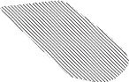
1
1 1
Figure 27.6 Different kinds of edges: (1) depth discontinuities; (2) surface orientation dis-
continuities; (3) reflectance discontinuities; (4) illumination discontinuities (shadows).Edges
Noise
in the image. Thus, edge detection can come early in the pipeline of operations and we call it
an “early” or “low-level” operation.The other operations require handling a larger area of the image. For example, a texture
description applies to a pool of pixels—to say “stripey,” you need to see some stripes. Optical
flow represents where pixels move to from one image in a sequence to the next, and this
can cover a larger area. Segmentation cuts an image into regions of pixels that naturally
belong together, and doing so requires looking at the whole region. Operations like this are
sometimes referred to as “mid-level” operations.Edges
Edges are straight lines or curves in the image plane across which there is a “significant”
change in image brightness. The goal of edge detection is to abstract away from the messy,
multi-megabyte image and towards a more compact, abstract representation, as in Figure 27.6.
Effects in the scene very often result in large changes in image intensity, and so produce edges
in the image. Depth discontinuities (labeled 1 in the figure) can cause edges because when
you cross the discontinuity, the color typically changes. When the surface normal changes
(labeled 2 in the figure), the image intensity often changes. When the surface reflectance
changes (labeled 3), the image intensity often changes. Finally, a shadow (labeled 4) is a
discontinuity in illumination that causes an edge in the image, even though there is not an
edge in the object. Edge detectors can’t disentangle the cause of the discontinuity, which is
left to later processing.Finding edges requires care. Figure 27.7 (top) shows a one-dimensional crosssection of
an image perpendicular to an edge, with an edge at x = 50.You might differentiate the image and look for places where the magnitude of the deriva-
tive I′(x) is large. This almost works, but in Figure 27.7 (middle), we see that although there
is a peak at x = 50, there are also subsidiary peaks at other locations (e.g., x = 75) that could be
mistaken for true edges. These arise because of the presence of “noise” in the image. Noisehere means changes to the value of a pixel that don’t have to do with an edge. For example,Section 27.3 Simple Image Features 997
2
1
0
1
0 10 20 30 40 50 60 70 80 90 100
1
0
1
0 10 20 30 40 50 60 70 80 90 100
1
0
1
0 10 20 30 40 50 60 70 80 90 100
Figure 27.7 Top: Intensity profile I(x) along a one-dimensional section across a step edge.
Middle: The derivative of intensity, I′(x). Large values of this function correspond to edges,
but the function is noisy. Bottom: The derivative of a smoothed version of the intensity. The
noisy candidate edge at x = 75 has disappeared.there could be thermal noise in the camera; there could be scratches on the object surface that
change the surface normal at the finest scale; there could be minor variations in the surface
albedo; and so on. Each of these effects make the gradient look big, but don’t mean that an
edge is present. If we “smooth” the image first, the spurious peaks are diminished, as we see
in Figure 27.7 (bottom).Smoothing involves using surrounding pixels to suppress noise. We will predict the “true”
value of our pixel as a weighted sum of nearby pixels, with more weight for the closest pixels.A natural choice of weights is a Gaussian filter. Recall that the zero-mean Gaussian function Gaussian filter
with standard deviation σ is
2 2 in one dimension, or
2πσ
Gσ (x) = √ 1 e—x /2σ
2πσ2
σ
G (x, y) = 1 e—(x2+y2)/2σ2 in two dimensions.
Applying a Gaussian filter means replacing the intensity I(x0, y0) with the sum, over all (x, y)
pixels, of I(x, y) Gσ(d), where d is the distance from (x0, y0) to (x, y). This kind of weighted
sum is so common that there is a special name and notation for it. We say that the function his the convolution of two functions f and g (denoted as h = f ∗g) if we have Convolution
+∞
h(x) =
∑
u=—∞
f (u) g(x— u) in one dimension, or
+∞
h(x, y) = ∑
+∞
∑ f (u, v) g(x— u, y— v) in two dimensions.
u=—∞ v=—∞
998 Chapter 27 Computer Vision
∗
So the smoothing function is achieved by convolving the image with the Gaussian, I Gσ. A
σ of 1 pixel is enough to smooth over a small amount of noise, whereas 2 pixels will smooth
a larger amount, but at the loss of some detail. Because the Gaussian’s influence fades rapidly± ±
with distance, in practice we can replace the ∞ in the sums with something like 3σ.
We have a chance to make an optimization here: we can combine the smoothing and
∗ ∗
the edge finding into a single operation. It is a theorem that for any functions f and g, the
derivative of the convolution, ( f g)′, is equal to the convolution with the derivative, f (g′).
So rather than smoothing the image and then differentiating, we can just convolve the image
with the derivative of the Gaussian smoothing function, G′σ . We then mark as edges those
peaks in the response that are above some threshold, chosen to eliminate spurious peaks due
to noise.
There is a natural generalization of this algorithm from one-dimensional crosssections to
general 2D images. In two dimensions edges may be at any angle θ. Considering the image
brightness as a scalar function of the variables x, y, its gradient is a vector∂I
∇I = ∂I
∂x
∂y
|| ||
Edges correspond to locations in images where the brightness undergoes a sharp change,
and thus the magnitude of the gradient, ∇I should be large at an edge point. When the
image gets brighter or darker, the gradient vector at each point gets longer or shorter, but thedirection of the gradient
∇I = cos θ
||∇I|| sin θ
Orientation
does not change. This gives us a θ = θ(x, y) at every pixel, which defines the edge orientation
at that pixel. This feature is often useful, because it does not depend on image intensity.
∗
As you might expect from the discussion on detecting edges in one-dimensional signals,
to form the gradient, we don’t actually compute ∇I, but rather ∇(I Gσ), after smoothing the
image by convolving it with a Gaussian. A property of convolutions is that this is equivalentto convolving the image with the partial derivatives of the Gaussian. Once we have computed
the gradient, we can obtain edges by finding edge points and linking them together. To tell
whether a point is an edge point, we must look at other points a small distance forward and
back along the direction of the gradient. If the gradient magnitude at one of these points is
larger, then we could get a better edge point by shifting the edge curve very slightly. Further-
more, if the gradient magnitude is too small, the point cannot be an edge point. So at an edge
point, the gradient magnitude is a local maximum along the direction of the gradient, and the
gradient magnitude is above a suitable threshold.Once we have marked edge pixels by this algorithm, the next stage is to link those pixels
that belong to the same edge curves. This can be done by assuming that any two neighboring
pixels that are both edge pixels with consistent orientations belong to the same edge curve.Edge detection isn’t perfect. Figure 27.8(a) shows an image of a scene containing a
stapler resting on a desk, and Figure 27.8(b) shows the output of an edge detection algorithm
on this image. As you can see, the output is not perfect: there are gaps where no edge appears,
and there are “noise” edges that do not correspond to anything of significance in the scene.
Later stages of processing will have to correct for these errors.Section 27.3 Simple Image Features 999
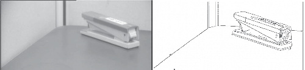
Figure 27.8 (a) Photograph of a stapler. (b) Edges computed from (a).
Texture
In everyday language, the texture of surfaces hints at what they feel like when you run a Texture
finger over them (the words “texture,” “textile,” and “text” have the same Latin root, a word
for weaving). In computational vision, texture refers to a pattern on a surface that can be
sensed visually. Usually, these patterns are roughly regular. Examples include the pattern of
windows on a building, the stitches on a sweater, the spots on a leopard’s skin, blades of grass
on a lawn, pebbles on a beach, and a crowd of people in a stadium.Sometimes the arrangement is quite periodic, as in the stitches on a sweater; in other
instances, such as pebbles on a beach, the regularity is only in a statistical sense: the density
of pebbles is roughly the same on different parts of the beach. A usual rough model of textureis a repetitive pattern of elements, sometimes called texels. This model is quite useful because Texels
it is surprisingly hard to make or find real textures that never repeat.
Texture is a property of an image patch, rather than a pixel in isolation. A good descrip-
tion of a patch’s texture should summarize what the patch looks like. The description should
not change when the lighting changes. This rules out using edge points; if a texture is brightly
lit, many locations within the patch will have high contrast and will generate edge points; but
if the same texture is viewed under less bright light, many of these edges will not be above
the threshold. The description should change in a sensible way when the patch rotates. It is
important to preserve the difference between vertical stripes and horizontal stripes but not if
the vertical stripes are rotated to the horizontal.Texture representations with these properties have been shown to be useful for two key
tasks. The first is identifying objects—a zebra and horse have similar shape, but different
textures. The second is matching patches in one image to patches in another image, a key
step in recovering 3D information from multiple images (Section 27.6.1).Here is a basic construction for a texture representation. Given an image patch, compute
the gradient orientation at each pixel in the patch, and then characterize the patch by a his-
togram of orientations. Gradient orientations are largely invariant to changes in illumination
(the gradient will get longer, but it will not change direction). The histogram of orientations
seems to capture important aspects of the texture. For example, vertical stripes will have two
peaks in the histogram (one for the left side of each stripe and one for the right); leopard spots
will have more uniformly distributed orientations.But we do not know how big a patch to describe. There are two strategies. In specialized
applications, image information reveals how big the patch should be (for example, one might1000 Chapter 27 Computer Vision
Optical flow
Sum of squared
differences (SSD)grow a patch full of stripes until it covers the zebra). An alternative is to describe a patch
centered at each pixel for a range of scales. This range usually runs from a few pixels to the
extent of the image. Now divide the patch into bins, and in each bin construct an orientation
histogram, then summarize the pattern of histograms across bins. It is no longer usual to
construct these descriptions by hand. Instead, convolutional neural networks are used to
produce texture representations. But the representations constructed by the networks seem to
mirror this construction very roughly.Optical flow
Next, let us consider what happens when we have a video sequence, instead of just a single
static image. Whenever there is relative movement between the camera and one or more
objects in the scene, the resulting apparent motion in the image is called optical flow. This
describes the direction and speed of motion of features in the image as a result of relative
motion between the viewer and the scene. For example, distant objects viewed from a moving
car have much slower apparent motion than nearby objects, so the rate of apparent motion
can tell us something about distance.In Figure 27.9 we show two frames from a video of a tennis player. On the right we
display the optical flow vectors computed from these images. The optical flow encodes useful
information about scene structure—the tennis player is moving and the background (largely)
isn’t. Furthermore, the flow vectors reveal something about what the player is doing—one
arm and one leg are moving fast, and the other body parts aren’t.The optical flow vector field can be represented by its components vx(x, y) in the x direc-
tion and vy(x, y) in the y direction. To measure optical flow, we need to find corresponding
points between one time frame and the next. A very simple-minded technique is based on the
fact that image patches around corresponding points have similar intensity patterns. Consider
a block of pixels centered at pixel p, (x0, y0), at time t. This block of pixels is to be compared
with pixel blocks centered at various candidate pixels qi at (x0 + Dx, y0 + Dy) at time t + Dt.
One possible measure of similarity is the sum of squared differences (SSD):—
SSD(Dx, Dy) = ∑ (I(x, y,t) I(x + Dx, y + Dy,t + Dt))2 .
(x,y)
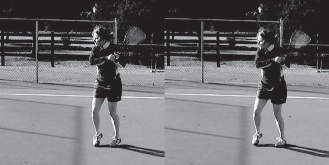
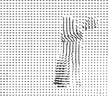
Figure 27.9 Two frames of a video sequence and the optical flow field corresponding to the
displacement from one frame to the other. Note how the movement of the tennis racket and
the front leg is captured by the directions of the arrows. (Images courtesy of Thomas Brox.)Section 27.3 Simple Image Features 1001
Here, (x, y) ranges over pixels in the block centered at (x0, y0). We find the (Dx, Dy) that
minimizes the SSD. The optical flow at (x0, y0) is then (vx, vy) = (Dx/Dt, Dy/Dt). Note that
for this to work, there should be some texture in the scene, resulting in windows containing a
significant variation in brightness among the pixels. If one is looking at a uniform white wall,
then the SSD is going to be nearly the same for the different candidate matches q, and the
algorithm is reduced to making a blind guess. The best-performing algorithms for measuring
optical flow rely on a variety of additional constraints to deal with situations in which the
scene is only partially textured.Segmentation of natural images
Segmentation is the process of breaking an image into groups of similar pixels. The basic Segmentation
idea is that each image pixel can be associated with certain visual properties, such as bright-
ness, color, and texture. Within an object, or a single part of an object, these attributes vary
relatively little, whereas across an inter-object boundary there is typically a large change in
one or more of these attributes. We need to find a partition of the image into sets of pixels
such that these constraints are satisfied as well as possible. Notice that it isn’t enough just to
find edges, because many edges are not object boundaries. So, for example, a tiger in grass
may generate an edge on each side of each stripe and each blade of grass. In all the confusing
edge data, we may miss the tiger for the stripes.There are two ways of studying the problem, one focusing on detecting the boundaries of
these groups, and the other on detecting the groups themselves, called regions. We illustrate Regions
this in Figure 27.10, showing boundary detection in (b) and region extraction in (c) and (d).
One way to formalize the problem of detecting boundary curves is as a classification
problem, amenable to the techniques of machine learning. A boundary curve at pixel location
(x, y) will have an orientation θ. An image neighborhood centered at (x, y) looks roughly
like a disk, cut into two halves by a diameter oriented at θ. We can compute the probability
Pb(x, y, θ) that there is a boundary curve at that pixel along that orientation by comparing
features in the two halves. The natural way to predict this probability is to train a machine
learning classifier using a data set of natural images in which humans have marked the ground
truth boundaries—the goal of the classifier is to mark exactly those boundaries marked by
humans and no others.Boundaries detected by this technique are better than those found using the simple edge
detection technique described previously. But there are still two limitations: (1) the boundary
pixels formed by thresholding Pb(x, y, θ) are not guaranteed to form closed curves, so this
approach doesn’t deliver regions, and (2) the decision making exploits only local context,
and does not use global consistency constraints.The alternative approach is based on trying to “cluster” the pixels into regions based on
their brightness, color and texture properties. There are a number of different ways in which
this intuition can be formalized mathematically. For instance, Shi and Malik (2000) set this
up as a graph partitioning problem. The nodes of the graph correspond to pixels, and edges
to connections between pixels. The weight Wi j on the edge connecting a pair of pixels i and
j is based on how similar the two pixels are in brightness, color, texture, etc. They then
find partitions that minimize a normalized cut criterion. Roughly speaking, the criterion for
partitioning the graph is to minimize the sum of weights of connections across the groups and
maximize the sum of weights of connections within the groups.1002 Chapter 27 Computer Vision
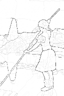
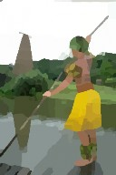
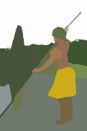
(a) (b) (c) (d)
Figure 27.10 (a) Original image. (b) Boundary contours, where the higher the Pb value,
the darker the contour. (c) Segmentation into regions, corresponding to a fine partition of
the image. Regions are rendered in their mean colors. (d) Segmentation into regions, corre-
sponding to a coarser partition of the image, resulting in fewer regions. (Images courtesy of
Pablo Arbelaez, Michael Maire, Charless Fowlkes and Jitendra Malik.)It turns out that the approaches based on finding boundaries and on finding regions can
be coupled, but we will not explore these possibilities here. Segmentation based purely on
low-level, local attributes such as brightness and color can not be expected to deliver the final
correct boundaries of all the objects in the scene. To reliably find boundaries associated with
objects, it is also necessary to incorporate high-level knowledge of the kinds of objects one
may expect to encounter in a scene. At this time, a popular strategy is to produce an over-
segmentation of an image, where one is guaranteed not to have missed marking any of the true
boundaries but may have marked many extra false boundaries as well. The resulting regions,
called superpixels, provide a significant reduction in computational complexity for various
algorithms, as the number of superpixels may be in the hundreds, compared to millions of
raw pixels. Exploiting high-level knowledge of objects is the subject of the next section, and
actually detecting the objects in images is the subject of Section 27.5.Appearance
Classifying Images
Image classification applies to two main cases. In one, the images are of objects, taken from
a given taxonomy of classes, and there’s not much else of significance in the picture—for
example, a catalog of clothing or furniture images, where the background doesn’t matter, and
the output of the classifier is “cashmere sweater” or “desk chair.”In the other case, each image shows a scene containing multiple objects. So in grassland
you might see a giraffe and a lion, and in the living room you might see a couch and lamp,
but you don’t expect a giraffe or a submarine in a living room. We now have methods for
large-scale image classification that can accurately output “grassland” or “living room.”Modern systems classify images using appearance (i.e., color and texture, as opposed
to geometry). There are two difficulties. First, different instances of the same class could
look different—some cats are black and others are orange. Second, the same cat could lookSection 27.4 Classifying Images 1003
Foreshortening Aspect
Occlusion Deformation
Figure 27.11 Important sources of appearance variation that can make different images of
the same object look different. First, elements can foreshorten, like the circular patch on the
top left. This patch is viewed at a glancing angle, and so is elliptical in the image. Second,
objects viewed from different directions can change shape quite dramatically, a phenomenon
known as aspect. On the top right are three different aspects of a doughnut. Occlusion causes
the handle of the mug on the bottom left to disappear when the mug is rotated. In this case,
because the body and handle belong to the same mug, we have self-occlusion. Finally, on the
bottom right, some objects can deform dramatically.different at different times depending on several effects, (as illustrated in Figure 27.11):
Lighting, which changes the brightness and color of the image.
Foreshortening, which causes a pattern viewed at a glancing angle to be distorted.
Aspect, which causes objects to look different when seen from different directions. A
doughnut seen from the side looks like a flattened oval, but from above it is an annulus.Occlusion, where some parts of the object are hidden. Objects can occlude one another,
or parts of an object can occlude other parts, an effect known as self-occlusion.Deformation, where the object changes its shape. For example, the tennis player moves
her arms and legs.
Modern methods deal with these problems by learning representations and classifiers from
very large quantities of training data using a convolutional neural network. With a sufficiently
rich training set the classifier will have seen any effect of importance many times in training,
and so can adjust for the effect.Image classification with convolutional neural networks
Convolutional neural networks (CNNs) are spectacularly successful image classifiers. With
enough training data and enough training ingenuity, CNNs produce very successful classifi-
cation systems, much better than anyone has been able to produce with other methods.The ImageNet data set played a historic role in the development of image classification
systems by providing them with over 14 million training images, classified into over 30,0001004 Chapter 27 Computer Vision
fine-grained categories. ImageNet also spurred progress with an annual competition. Systems
are evaluated by both the classification accuracy of their single best guess and by top-5 ac-
curacy, in which systems are allowed to submit five guesses—for example, malamute, husky,. ImageNet has 189 subcategories of dog, so even dog-loving
humans find it hard to label images correctly with a single guess.In the first ImageNet competition in 2010, systems could do no better than 70% top-5
accuracy. The introduction of convolutional neural networks in 2012 and their subsequent
refinement led to an accuracy of 98% in top-5 (surpassing human performance) and 87% in
top-1 accuracy by 2019. The primary reason for this success seems to be that the features that
are being used by CNN classifiers are learned from data, not hand-crafted by a researcher;
this ensures that the features are actually useful for classification.Progress in image classification has been rapid because of the availability of large, chal-
lenging data sets such as ImageNet; because of competitions based on these data sets that
are fair and open; and because of the widespread dissemination of successful models. The
winners of competitions publish the code and often the pretrained parameters of their models,
making it easy for others to fiddle with successful architectures and try to make them better.Why convolutional neural networks classify images well
Image classification is best understood by looking at data sets, but ImageNet is much too
large to look at in detail. The MNIST data set is a collection of 70,000 images of handwritten
digits, 0–9, which is often used as a standard warmup data set. Looking at this data set (some
examples appear in Figure 27.12) exposes some important, quite general, properties. You can
take an image of a digit and make a number of small alterations without changing the identity
of the digit: you can shift it, rotate it, make it brighter or darker, smaller or larger. This means
that individual pixel values are not particularly informative—we know that an 8 should have
some dark pixels in the center and a 0 should not, but those dark pixels will be in slightly
different pixel locations in each instance of an 8.Another important property of images is that local patterns can be quite informative:
The digits 0, 6, 8 and 9 have loops; the digits 4 and 8 have crossings; the digits 1, 2, 3, 5
and 7 have line endings, but no loops or crossings; the digits 6 and 9 have loops and line
endings. Furthermore, spatial relations between local patterns are informative. A 1 has two
line endings above one another; a 6 has a line ending above a loop. These observations
suggest a strategy that is a central tenet of modern computer vision: you construct features
that respond to patterns in small, localized neighborhoods; then other features look at patterns
of those features; then others look at patterns of those, and so on.This is what convolutional neural networks do well. You should think of a layer—a con-
volution followed by a ReLU activation function—as a local pattern detector (Figure 27.12).
The convolution measures how much each local window of the image looks like the kernel
pattern; the ReLU sets low-scoring windows to zero, and emphasizes high-scoring windows.
So convolution with multiple kernels finds multiple patterns; furthermore, composite patterns
can be detected by applying another layer to the output of the first layer.Think about the output of the first convolutional layer. Each location receives inputs from
pixels in a window about that location. The output of the ReLU, as we have seen, forms a
simple pattern detector. Now if we put a second layer on top of this, each location in the
second layer receives inputs from first-layer values in a window about that location. ThisSection 27.4 Classifying Images 1005
Convolution output Test against threshold
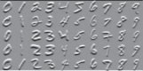
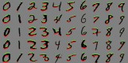
Digits
Kernels
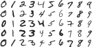
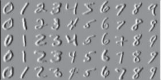
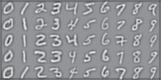
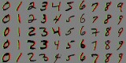
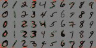
Figure 27.12 On the far left, some images from the MNIST data set. Three kernels appear
on the center left. They are shown at actual size (tiny blocks) and magnified to reveal their
content: mid-grey is zero, light is positive, and dark is negative. Center right shows the results
of applying these kernels to the images. Right shows pixels where the response is bigger than
a threshold (green) or smaller than a threshold (red). You should notice that this gives (from
top to bottom): a horizontal bar detector; a vertical bar detector; and (harder to note) a line
ending detector. These detectors pay attention to the contrast of the bar, so (for example) a
horizontal bar that is light on top and dark below produces a positive (green) response, and
one that is dark on top and light below gets a negative (red) response. These detectors are
moderately effective, but not perfect.means that locations in the second layer are affected by a larger window of pixels than those
in the first layer. You should think of these as representing “patterns of patterns.” If we place
a third layer on top of the second layer, locations in that third layer will depend on an even
larger window of pixels; a fourth layer will depend on a yet larger window, and so on. The
network is creating patterns at multiple levels, and is doing that by learning from the data
rather than having the patterns given to it by a programmer.augmentation
While training a CNN “out of the box” does sometimes work, it helps to know a few
practical techniques. One of the most important is data set augmentation, in which training Data setexamples are copied and modified slightly. For example, one might randomly shift, rotate,
or stretch an image by a small amount, or randomly shift the hue of the pixels by a small
amount. Introducing this simulated variation in viewpoint or lighting to the data set helps to
increase the size of the data set, though of course the new examples are highly correlated with
the originals. It is also possible to use augmentation at test time rather than training time. In
this approach, the image is replicated and modified several times (e.g., with random cropping)
and the classifier is run on each of the modified images. The outputs of the classifier from
each copy are then used to vote for a final decision on the overall class.When you are classifying images of scenes, every pixel could be helpful. But when you
are classifying images of objects, some pixels aren’t part of the object, and so might be a1006 Chapter 27 Computer Vision
Context
Bounding box
Sliding windowdistraction. For example, if a cat is lying on a dog bed, we want a classifier to concentrate
on the pixels of the cat, not the bed. Modern image classifiers handle this well, classifying
an image as “cat” accurately even if few pixels actually lie on the cat. There are two reasons
for this. First, CNN-based classifiers are good at ignoring patterns that aren’t discriminative.
Second, patterns that lie off the object might be discriminative (e.g., a cat toy, a collar with
a little bell, or a dish of cat food might actually help tell that we are looking at a cat). This
effect is known as context. Context can help or can hurt, depending quite strongly on the
particular data set and application.
Detecting Objects
Image classifiers predict what is in the image—they classify the whole image as belonging to
one class. Object detectors find multiple objects in an image, report what class each object is,
and also report where each object is by giving a bounding box around the object.1 The set of
classes is fixed in advance. So we might try to detect all faces, all cars, or all cats.We can build an object detector by looking at a small sliding window onto the larger
image—a rectangle. At each spot, we classify what we see in the window, using a CNN
classifier. We then take the high-scoring classifications—a cat over here and a dog over
there—and ignore the other windows. After some work resolving conflicts, we have a final
set of objects with their locations. There are still some details to work out:Decide on a window shape: The easiest choice by far is to use axis-aligned rectangles.
(The alternative—some form of mask that cuts the object out of the image—is hardly
ever used, because it is hard to represent and to compute with.) We still need to choose
the width and height of the rectangles.Build a classifier for windows: We already know how to do this with a CNN.
Decide which windows to look at: Out of all possible windows, we want to select ones
that are likely to have interesting objects in them.Choose which windows to report: Windows will overlap, and we don’t want to report
the same object multiple times in slightly different windows. Some objects are not
worth mentioning; think about the number of chairs and people in a picture of a large
packed lecture hall. Should they all be reported as individual objects? Perhaps only the
objects that appear large in the image—the front row—should be reported. The choice
depends on the intended use of the object detector.Report precise locations of objects using these windows: Once we know that the
object is somewhere in the window, we can afford to do more computation to figure out
a more precise location within the window.
×
Let’s look more carefully at the problem of deciding which windows to look at. Search-
ing all possible windows isn’t efficient—in an n n pixel image there are O(n4) possible
rectangular windows. But we know that windows that contain objects tend to have quite co-
herent color and texture. On the other hand, windows that cut an object in half have regions
or edges that cross the side of the window. So it makes sense to have a mechanism that scores1 We will use the term “box” to mean any axis-aligned rectangular region of the image, and the term “window”
mostly as a synonym for “box,” but with the connotation that we have a window onto the input where we are
hoping to see something, and a bounding box in the output when we have found it.Section 27.5 Detecting Objects 1007
“objectness”—whether a box has an object in it, independent of what that object is. We can
find the boxes that look like they have an object in them, and then classify the object for just
those boxes that pass the objectness test.network (RPN)
A network that finds regions with objects is called a regional proposal network (RPN). Regional proposal
The object detector known as Faster RCNN encodes a large collection of bounding boxes as a
map of fixed size. Then it builds a network that can predict a score for each box, and trains this
network so the score is large when the box contains an object, and small otherwise. Encoding
boxes as a map is straightforward. We consider boxes centered on points throughout the
image; we don’t need to consider every possible point (because moving by one pixel is not
likely to change the classification); a good choice is a stride (the offset between center points)
of 16 pixels. For each center point we consider several possible boxes, called anchor boxes.
Faster RCNN uses nine boxes: small, medium, and large sizes; and tall, wide, and square
aspect ratios.In terms of the neural network architecture, construct a 3D block where each spatial
location in the block has two dimensions for the center point and one dimension for the type
of box. Now any box with a good enough objectness score is called a region of interest(ROI), and must be checked by a classifier. But CNN classifiers prefer images of fixed size,
and the boxes that pass the objectness test will differ in size and shape. We can’t make
the boxes have the same number of pixels, but we can make them have the same number
of features by sampling the pixels to extract features, a process called ROI pooling. This
fixed-size feature map is then passed to the classifier.×
Now for the problem of deciding which windows to report. Assume we look at windows
of size 32 32 with a stride of 1: each window is offset by just one pixel from the one before.
There will be many windows that are similar, and should have similar scores. If they all have
a score above threshold we don’t want to report all of them, because they very likely all refer
to slightly different views of the same object. On the other hand if the stride is too large, it
might be that an object is not contained within any one window, and will be missed. Instead,suppression
we can use a greedy algorithm called non-maximum suppression. First, build a sorted list Non-maximum
of all windows with scores over a threshold. Then, while there are windows in the list, choose
the window with the highest score and accept it as containing an object; discard from the list
all other largely overlapping windows.Finally, we have the problem of reporting the precise location of objects. Assume we
have a window that has a high score, and has passed through non-maximum suppression. This
window is unlikely to be in exactly the right place (remember, we looked at a relatively small
number of windows with a small number of possible sizes). We use the feature representation
computed by the classifier to predict improvements that will trim the window down to aregression
proper bounding box, a step known as bounding box regression. Bounding box
Evaluating object detectors takes care. First we need a test set: a collection of images
with each object in the image marked by a ground truth category label and bounding box.
Usually, the boxes and labels are supplied by humans. Then we feed each image to the object
detector and compare its output to the ground truth. We should be willing to accept boxes
that are off by a few pixels, because the ground truth boxes won’t be perfect. The evaluation
score should balance recall (finding all the objects that are there) and precision (not finding
objects that are not there).1008 Chapter 27 Computer Vision
Crop
ROIs
Box non-max
suppression
Box proposal
network
0.9
0.7
Bounding box
regressionNon-max
suppressionNeural net
classifierROI pool
Neural net
feature
stack
Image
Figure 27.13 Faster RCNN uses two networks. A picture of a young Nelson Mandela is
fed into the object detector. One network computes “objectness” scores of candidate image
boxes, called “anchor boxes,” centered at a grid point. There are nine anchor boxes (three
scales, three aspect ratios) at each grid point. For the example image, an inner green box and
an outer blue box have passed the objectness test. The second network is a feature stack that
computes a representation of the image suitable for classification. The boxes with highest
objectness score are cut from the feature map, standardized in size with ROI pooling, and
passed to a classifier. The blue box has a higher score than the green box and overlaps it, so
the green box is rejected by non-maximum suppression. Finally, bounding box regression the
blue box so that it fits the face. This means that the relatively coarse sampling of locations,
scales, and aspect ratios does not weaken accuracy. Photo by Sipa/Shutterstock.The 3D World
Images show a 2D picture of a 3D world. But this 2D picture is rich with cues about the 3D
world. One kind of cue occurs when we have multiple pictures of the same world, and can
match points between pictures. Another kind of cue is available within a single picture.3D cues from multiple views
Two pictures of objects in a 3D world are better than one for several reasons:
If you have two images of the same scene taken from different viewpoints and you know
enough about the two cameras, you can construct a 3D model—a collection of points
with their coordinates in 3 dimensions—by figuring out which point in the first view
corresponds to which point in the second view and applying some geometry. This is
true for almost all pairs of viewing directions and almost all kinds of camera.If you have two views of enough points, and you know which point in the first view
corresponds to which point in the second view, you do not need to know much aboutSection 27.6 The 3D World 1009
the cameras to construct a 3D model. Two views of two points gives you four x, y co-
ordinates, and you only need three coordinates to specify a point in 3D space; the extra
coordinate comes in helpful to figure out what you need to know about the cameras.
This is true for almost all pairs of viewing directions and almost all kinds of camera.The key problem is to establish which point in the first view corresponds to which in the
second view. Detailed descriptions of the local appearance of a point using simple texture
features (like those in section 27.3.2) are often enough to match points. For example, in a
scene of traffic on a street, there might be only one green light visible in two images taken
of the scene; we can then hypothesize that these correspond to each other. The geometry of
multiple camera views is very well understood (but sadly too complicated to expound here).
The theory produces geometric constraints on which point in one image can match with which
point in the other. Other constraints can be obtained by reasoning about the smoothness of
the reconstructed surfaces.There are two ways of getting multiple views of a scene. One is to have two cameras
or two eyes (section 27.6.2). Another is to move (section 27.6.3). If you have more than
two views, you can recover both the geometry of the world and the details of the view very
accurately. Section 27.7.3 discusses some applications for this technology.
Binocular stereopsis
Most vertebrates have two eyes. This is useful for redundancy in case of a lost eye, but it
helps in other ways too. Most prey have eyes on the side of the head to enable a wider field ofvision. Predators have the eyes in the front, enabling them to use binocular stereopsis. Hold Binocular stereopsis
both index fingers up in front of your face, with one eye closed, and adjust them so the front
finger occludes the other finger in the open eye’s view. Now swap eyes; you should notice that
the fingers have shifted position with respect to one another. This shifting of position fromleft view to right view is known as disparity. In the right choice of coordinate system, if we Disparity
superimpose left and right images of an object at some depth, the object shifts horizontally in
the superimposed image, and the size of the shift is the reciprocal of the depth. You can see
this in Figure 27.14, where the nearest point of the pyramid is shifted to the left in the right
image and to the right in the left image.To measure disparity we need to solve the correspondence problem—to determine for a
point in the left image, its “partner” in the right image which results from the projection of
the same scene point. This is analogous to what is done in measuring optical flow, and the
most simple-minded approaches are somewhat similar. These methods search for blocks of
left and right pixels that match, using the sum of squared differences (as in Section 27.3.3).
More sophisticated methods use more detailed texture representations of blocks of pixels (as
in Section 27.3.2). In practice, we use much more sophisticated algorithms, which exploit
additional constraints.Assuming that we can measure disparity, how does this yield information about depth
in the scene? We will need to work out the geometrical relationship between disparity and
depth. We will consider first the case when both the eyes (or cameras) are looking forward
with their optical axes parallel. The relationship of the right camera to the left camera is thenjust a displacement along the x-axis by an amount b, the baseline. We can use the optical Baseline
flow equations from Section 27.3.3, if we think of this as resulting from a translation vector
T acting for time δt, with Tx = b/δt and Ty = Tz = 0. The horizontal and vertical disparity
1010 Chapter 27 Computer Vision
Right Left
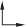
Perceived object
Left image
Right image
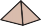

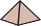
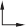
Disparity
(a) (b)
Figure 27.14 Translating a camera parallel to the image plane causes image features to move
in the camera plane. The disparity in positions that results is a cue to depth. If we superimpose
left and right images, as in (b), we see the disparity.Fixate
are given by the optical flow components, multiplied by the time step δt, H = vx δt, V = vy δt.
Carrying out the substitutions, we get the result that H = b/Z, V = 0. In other words, the
horizontal disparity is equal to the ratio of the baseline to the depth, and the vertical disparity
is zero. We can recover the depth Z given that we know b, and can measure H.Under normal viewing conditions, humans fixate; that is, there is some point in the scene
at which the optical axes of the two eyes intersect. Figure 27.15 shows two eyes fixated
at a point P0, which is at a distance Z from the midpoint of the eyes. For convenience,
we will compute the angular disparity, measured in radians. The disparity at the point of
fixation P0 is zero. For some other point P in the scene that is δZ farther away, we can
compute the angular displacements of the left and right images of P, which we will call PL
and PR, respectively. If each of these is displaced by an angle δθ/2 relative to P0, then the
displacement between PL and PR, which is the disparity of P, is just δθ. From Figure 27.15,tan θ = b/2 and tan(θ — δθ/2) = b/2 , but for small angles, tan θ ≈ θ, so
Z Z+δZ
b/2 b/2 bδZ
δθ/2 =
Z — Z + δZ ≈ 2Z2
and, since the actual disparity is δθ, we have
disparity = bδZ
Z2
In humans, the baseline b is about 6 cm. Suppose that Z is about 100 cm and that the
smallest detectable δθ (corresponding to the size of a single pixel) is about 5 seconds of arc,
giving a δZ of 0.4 mm. For Z = 30 cm, we get the impressively small value δZ = 0.036 mm.
That is, at a distance of 30 cm, humans can discriminate depths that differ by as little as 0.036
mm, enabling us to thread needles and the like.Section 27.6 The 3D World 1011
Left
eyePL
b
du/2
u
P0 P
Right PR
eye
Z dZ
Figure 27.15 The relation between disparity and depth in stereopsis. The centers of projec-
tion of the two eyes are distance b apart, and the optical axes intersect at the fixation point
P0. The point P in the scene projects to points PL and PR in the two eyes. In angular terms,
the disparity between these is δθ (the diagram shows two angles of δθ/2).3D cues from a moving camera
Assume we have a camera moving in a scene. Take Figure 27.14 and label the left image
“Time t” and the right image “Time t + 1”. The geometry has not changed, so all the material
from the discussion of stereopsis also applies when a camera moves. What we called disparity
in that section is now thought of as apparent motion in the image, and called optical flow. This
is a source of information for both the movement of the camera and the geometry of the scene.
To understand this, we state (without proof) an equation that relates the optical flow to the
viewer’s translational velocity T and the depth in the scene.The optical flow field is a vector field of velocities in the image, (vx(x, y), vy(x, y)). Ex-
pressions for these components, in a coordinate frame centered on the camera and assuming
a focal length of f = 1, arevx(x, y) = —Tx + xTz and vy(x, y) = —Ty + yTz .
Z(x, y) Z(x, y)
where Z(x, y) is the z-coordinate (that is, depth) of the point in the scene corresponding to the
point in the image at (x, y).Note that both components of the optical flow, vx(x, y) and vy(x, y), are zero at the point
x = Tx/Tz, y = Ty/Tz. This point is called the focus of expansion of the flow field. Suppose Focus of expansion
we change the origin in the x–y plane to lie at the focus of expansion; then the expressions
for optical flow take on a particularly simple form. Let (x′, y′) be the new coordinates defined
by x′ = x— Tx/Tz, y′ = y— Ty/Tz. Thenvx(x′, y′) = x′Tz
Z(x′, y′)
, vy(x′, y′) = y′Tz .
Z(x′, y′)
Note that there is a scale factor ambiguity here (which is why assuming a focal length of
f = 1 is harmless). If the camera was moving twice as fast, and every object in the scene was
twice as big and at twice the distance to the camera, the optical flow field would be exactly
the same. But we can still extract quite useful information.1012 Chapter 27 Computer Vision
Pose
Suppose you are a fly trying to land on a wall and you want useful information from
the optical flow field. The optical flow field cannot tell you the distance to the wall or
the velocity to the wall, because of the scale ambiguity. But if you divide the distance
by the velocity, the scale ambiguity cancels. The result is the time to contact, given by
Z/Tz, and is very useful indeed to control the landing approach. There is considerable
experimental evidence that many different animal species exploit this cue.Consider two points at depths Z1, Z2 respectively. We may not know the absolute value
of either of these, but by considering the inverse of the ratio of the optical flow magni-
tudes at these points, we can determine the depth ratio Z1/Z2. This is the cue of motion
parallax, one we use when we look out of the side window of a moving car or train and
infer that the slower-moving parts of the landscape are farther away.
3D cues from one view
Even a single image provides a rich collection of information about the 3D world. This is
true even if the image is just a line drawing. Line drawings have fascinated vision scientists,
because people have a sense of 3D shape and layout even though the drawing seems to contain
very little information to choose from the vast collection of scenes that could produce the
same drawing. Occlusion is one key source of information: if there is evidence in the picture
that one object occludes another, then the occluding object is closer to the eye.In images of real scenes, texture is a strong cue to 3D structure. Section 27.3.2 stated that
texture is a repetitive pattern of texels. Although the distribution of texels may be uniform on
objects in the scene—for example, pebbles on a beach—it may not be uniform in image—
the farther pebbles appear smaller than the nearer pebbles. As another example, think about
a piece of polka-dot fabric. All the dots are the same size and shape on the fabric, but in
a perspective view some dots are ellipses due to foreshortening. Modern methods exploit
these cues by learning a mapping from images to 3D structure (Section 27.7.4), rather than
reasoning directly about the underlying mathematics of texture.Shading—variation in the intensity of light received from different portions of a surface
in a scene—is determined by the geometry of the scene and by the reflectance properties of
the surfaces. There is very good evidence that shading is a cue to 3D shape. The physical
argument is easy. From the physical model of section 27.2.4, we know that if a surface normal
points toward the light source, the surface is brighter, and if it points away, the surface is
darker. This argument gets more complicated if the reflectance of the surface isn’t known,
and the illumination field isn’t even, but humans seem to be able to get a useful perception of
shape from shading. We know frustratingly little about algorithms to do this.If there is a familiar object in the picture, what it looks like depends very strongly on its
pose, that is, its position and orientation with respect to the viewer. There are straightforward
algorithms for recovering pose from correspondences between points on an object and points
on a model of the object. Recovering the pose of a known object has many applications. For
instance, in an industrial manipulation task, the robot arm cannot pick up an object until the
pose is known. Robotic surgery applications depend on exactly computing the transforma-
tions between the camera’s position and the positions of the surgical tool and the patient (to
yield the transformation from the tool’s position to the patient’s position).Spatial relations between objects are another important cue. Here is an example. All
pedestrians are about the same height, and they tend to stand on a ground plane. If weSection 27.7 Using Computer Vision 1013
know where the horizon is in an image, we can rank pedestrians by distance to the camera.
This works because we know where their feet are, and pedestrians whose feet are closer to
the horizon in the image are farther away from the camera, and so must be smaller in the
image. This means we can rule out some detector responses—if a detector finds a pedestrian
who is large in the image and whose feet are close to the horizon, it has found an enormous
pedestrian; these don’t exist, so the detector is wrong. In turn, a reasonably reliable pedestrian
detector is capable of producing estimates of the horizon, if there are several pedestrians in
the scene at different distances from the camera. This is because the relative scaling of the
pedestrians is a cue to where the horizon is. So we can extract a horizon estimate from the
detector, then use this estimate to prune the pedestrian detector’s mistakes.
Using Computer Vision
Here we survey a range of computer vision applications. There are now many reliable com-
puter vision tools and toolkits, so the range of applications that are successful and useful is
extraordinary. Many are developed at home by enthusiasts for special purposes, which is
testimony to how usable the methods are and how much impact they have. (For example, an
enthusiast created a great object-detection-based pet door that refuses entry to a cat if it is
bringing in a dead mouse–a Web search will find it for you).Understanding what people are doing
If we could build systems that understood what people are doing by analyzing video, we could
build human-computer interfaces that watch people and react to their behavior. With these
interfaces, we could: design buildings and public places better, by collecting and using data
about what people do in public; build more accurate and less intrusive security surveillance
systems; build automated sports commentators; make construction sites and workplaces safer
by generating warnings when people and machines get dangerously close; build computer
games that make a player get up and move around; and save energy by managing heat and
light in a building to match where the occupants are and what they are doing.The state of the art for some problems is now extremely strong. There are methods that
can predict the locations of a person’s joints in an image very accurately. Quite good estimates
of the 3D configuration of that person’s body follow (see Figure 27.16). This works because
pictures of the body tend to have weak perspective effects, and body segments don’t vary
much in length, so the foreshortening of a body segment in an image is a good cue to the
angle between it and the camera plane. With a depth sensor, these estimates can be made fast
enough to build them into computer game interfaces.Classifying what people are doing is harder. Video that shows rather structured behaviors,
like ballet, gymnastics, or tai chi, where there are quite specific vocabularies that refer to very
precisely delineated activities on simple backgrounds, is quite easy to deal with. Good results
can be obtained with a lot of labeled data and an appropriate convolutional neural network.
However, it can be difficult to prove that the methods actually work, because they rely so
strongly on context. For example, a classifier that labels “swimming” sequences very well
might just be a swimming pool detector, which wouldn’t work for (say) swimmers in rivers.More general problems remain open—for example, how to link observations of the body
and the objects nearby to the goals and intentions of the moving people. One source of1014 Chapter 27 Computer Vision
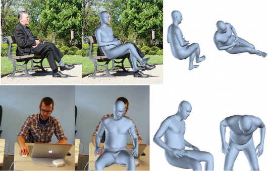
Figure 27.16 Reconstructing humans from a single image is now practical. Each row shows
a reconstruction of 3D body shape obtained using a single image. These reconstructions are
possible because methods can estimate the location of joints, the joint angles in 3D, the shape
of the body, and the pose of the body with respect to an image. Each row shows the follow-
ing: far left a picture; center left the picture with the reconstructed body superimposed;
center right another view of the reconstructed body; and far right yet another view of the
reconstructed body. The different views of the body make it much harder to conceal errors
in reconstruction. Figure courtesy of Angjoo Kanazawa, produced by a system described in
Kanazawa et al. (2018a).difficulty is that similar behaviors look different, and different behaviors look similar, as
Figure 27.17 shows.Another difficulty is caused by time scale. What someone is doing depends quite strongly
on the time scale, as Figure 27.18 illustrates. Another important effect shown in that figure
is that behavior composes—several recognized behaviors may be combined to form a single
higher-level behavior such as fixing a snack.It may also be that unrelated behaviors are going on at the same time, such as singing a
song while fixing a snack. A challenge is that we don’t have a common vocabulary for the
pieces of behavior. People tend to think they know a lot of behavior names but can’t produce
long lists of such words on demand. That makes it harder to get data sets of consistently
labeled behaviors.Learned classifiers are guaranteed to behave well only if the training and test data come
from the same distribution. We have no way of checking that this constraint applies to images,
but empirically we observe that image classifiers and object detectors work very well. But for
activity data, the relationship between training and test data is more untrustworthy becauseSection 27.7 Using Computer Vision 1015
Open fridge
Take something
out of fridgeFigure 27.17 The same action can look very different; and different actions can look similar.
These examples show actions taken from a data set of natural behaviors; the labels are chosen
by the curators of the data set, rather than predicted by an algorithm. Top: examples of the
label “opening fridge,” some shown in closeup and some from afar. Bottom: examples of
the label “take something out of fridge.” Notice how in both rows the subject’s hand is close
to the fridge door—telling the difference between the cases requires quite subtle judgment
about where the hand is and where the door is. Figure courtesy of David Fouhey, taken from
a data set described in Fouhey et al. (2018).Timeline
Figure 27.18 What you call an action depends on the time scale. The single frame at the
top is best described as opening the fridge (you don’t gaze at the contents when you close a
fridge). But if you look at a short clip of video (indicated by the frames in the center row),
the action is best described as getting milk from the fridge. If you look at a long clip (the
frames in the bottom row), the action is best described as fixing a snack. Notice that this
illustrates one way in which behavior composes: getting milk from the fridge is sometimes
part of fixing a snack, and opening the fridge is usually part of getting milk from the fridge.
Figure courtesy of David Fouhey, taken from a data set described in Fouhey et al. (2018).1016 Chapter 27 Computer Vision
A baby eating a piece
of food in his mouthA young boy eating
a piece of cakeA small bird is perched
on a branchA small brown bear is
sitting in the grassFigure 27.19 Automated image captioning systems produce some good results and some
failures. The two captions at left describe the respective images well, although “eating . . . in
his mouth” is a disfluency that is fairly typical of the recurrent neural network language mod-
els used by early captioning systems. For the two captions on the right, the captioning system
seems not to know about squirrels, and so guesses the animal from context; it also fails to
recognize that the two squirrels are eating. Image credits: geraine/Shutterstock; ESB Pro-
fessional/Shutterstock; BushAlex/Shutterstock; Maria.Tem/Shutterstock. The images shown
are similar but not identical to the original images from which the captions were generated.
For the original images see Aneja et al. (2018).Tagging system
Captioning systems
people do so many things in so many contexts. For example, suppose we have a pedestrian
detector that performs well on a large data set. There will be rare phenomena (for example,
people mounting unicycles) that do not appear in the training set, so we can’t say for sure
how the detector will work in such cases. The challenge is to prove that the detector is safe
whatever pedestrians do, which is difficult for current theories of learning.Linking pictures and words
Many people create and share pictures and videos on the Internet. The difficulty is finding
what you want. Typically, people want to search using words (rather than, say, example
sketches). Because most pictures don’t come with words attached, it is natural to try and
build tagging systems that tag images with relevant words. The underlying machinery is
straightforward—we apply image classification and object detection methods and tag the im-
age with the output words. But tags aren’t a comprehensive description of what is happening
in an image. It matters who is doing what, and tags don’t capture this. For example, tagging
a picture of a cat in the street with the object categories “cat”, “street”, “trash can” and “fish
bones” leaves out the information that the cat is pulling the fish bones out of an open trash
can on the street.As an alternative to tagging, we might build captioning systems—systems that write a
caption of one or more sentences describing the image. The underlying machinery is again
straightforward—couple a convolutional network (to represent the image) to a recurrent neu-
ral network or transformer network (to generate sentences), and train the result with a data set
of captioned images. There are many images with captions available on the Internet; curated
data sets use human labor to augment each image with additional captions to capture the vari-
ation in natural language. For example, the COCO (Common Objects in Context) data set is
a comprehensive collection of over 200,000 images labeled with five captions per image.Current methods for captioning use detectors to find a set of words that describe the
image, and provide those words to a sequence model that is trained to generate a sentence.Section 27.7 Using Computer Vision 1017
Q. What is the cat wearing?
A. Hat
Q. How many holes are in the pizza?
A. 8
Q. What is the weather like?
A. Rainy
Q. What letter is on the racket?
A. w
Q. What surface is this?
A. Clay
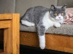
Q. What color is the right front leg?
A. Brown
Q. What toppings are on the pizza?
A. Mushrooms
Q. Why is the sign bent?
A. It’s not
Figure 27.20 Visual question-answering systems produce answers (typically chosen from a
multiple-choice set) to natural-language questions about images. Top: the system is produc-
ing quite sensible answers to rather difficult questions about the image. Bottom: less satis-
factory answers. For example, the system is guessing about the number of holes in a pizza,
because it doesn’t understand what counts as a hole, and it has real difficulty counting. Simi-
larly, the system selects brown for the cat’s leg because the background is brown and it can’t
localize the leg properly. Image credits: (Top) Tobyanna/Shutterstock; 679411/Shutterstock;
ESB Professional/Shutterstock; Africa Studio/Shutterstock; (Bottom) Stuart Russell; Max-
isport/Shutterstock; Chendongshan/Shutterstock; Scott Biales DitchTheMap/Shutterstock.
The images shown are similar but not identical to the original images to which the question-
answering system was applied. For the original images see Goyal et al. (2017).The most accurate methods search through the sentences that the model can generate to find
the best, and strong methods appear to require a slow search. Sentences are evaluated with
a set of scores that check whether the generated sentence (a) uses phrases common in the
ground truth annotations and (b) doesn’t use other phrases. These scores are hard to use
directly as a loss function, but reinforcement learning methods can be used to train networks
that get very good scores. Often there will be an image in the training set whose description
has the same set of words as an image in the test set; in that case a captioning system can just
retrieve a valid caption rather than having to generate a new one. Caption writing systems
produce a mix of excellent results and embarrassing errors (see Figure 27.19).Captioning systems can hide their ignorance by omitting to mention details they can’t get
right or by using contextual cues to guess. For example, captioning systems tend to be poor at
identifying the gender of people in images, and often guess based on training data statistics.
That can lead to errors—men also like shopping and women also snowboard. One way to
establish whether a system has a good representation of what is happening in an image is toanswering (VQA)
force it to answer questions about the image. This is a visual question answering or VQA Visual question
system. An alternative is a visual dialog system, which is given a picture, its caption, and a Visual dialog
dialog. The system must then answer the last question in the dialog. As Figure 27.20 shows,vision remains extremely hard and VQA systems often make errors.
1018 Chapter 27 Computer Vision
Reconstruction from many views
Reconstructing a set of points from many views—which could come from video or from an
aggregation of tourist photographs—is similar to reconstructing the points from two views,
but there are some important differences. There is far more work to be done to establish cor-
respondence between points in different views, and points can go in and out of view, making
the matching and reconstruction process messier. But more views means more constraints
on the reconstruction and on the recovered viewing parameters, so it is usually possible to
produce extremely accurate estimates of both the position of the points and of the viewing
parameters. Rather roughly, reconstruction proceeds by matching points over pairs of im-
ages, extending these matches to groups of images, coming up with a rough solution for both
geometry and viewing parameters, then polishing that solution. Polishing means minimizing
the error between points predicted by the model (of geometry and viewing parameters) and
the locations of image features. The detailed procedures are too complex to cover fully, but
are now very well understood and quite reliable.All the geometric constraints on correspondences are known for any conceivably useful
form of camera. The procedures can be generalized to deal with views that are not ortho-
graphic; to deal with points that are observed in only some views; to deal with unknown
camera parameters (like focal length); and to exploit various sophisticated searches for ap-
propriate correspondences. It is practical to accurately reconstruct a model of an entire city
from images. Some applications are:Model building: For example, one might build a modeling system that takes many
views depicting an object and produces a very detailed 3D mesh of textured polygons
for use in computer graphics and virtual reality applications. It is routine to build models
like this from video, but such models can now be built from apparently random sets of
pictures. For example, you can build a 3D model of the Statue of Liberty from pictures
found on the Internet.Mix animation with live actors in video: To place computer graphics characters into
real video, we need to know how the camera moved for the real video, so we can render
the character correctly, changing the view as the camera moves.Path reconstruction: Mobile robots need to know where they have been. If the robot
has a camera, we can build a model of the camera’s path through the world; that will
serve as a representation of the robot’s path.Construction management: Buildings are enormously complicated artifacts, and keep-
ing track of what is happening during construction is difficult and expensive. One way
to keep track is to fly drones through the construction site once a week, filming the
current state. Then build a 3D model of the current state and explore the difference
between the plans and the reconstruction using visualization techniques. Figure 27.21
illustrates this application.
Geometry from a single view
Geometric representations are particularly useful if you want to move, because they can reveal
where you are, where you can go, and what you are likely bump into. But it is not always
convenient to use multiple views to produce a geometric model. For example, when you open
the door and step into a room, your eyes are too close together to recover a good representationSection 27.7 Using Computer Vision 1019
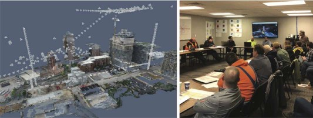
Figure 27.21 3D models of construction sites are produced from images by structure-from-
motion and multiview stereo algorithms. They help construction companies to coordinate
work on large buildings by comparing a 3D model of the actual construction to date with
the building plans. Left: A visualization of a geometric model captured by drones. The
reconstructed 3D points are rendered in color, so the result looks like progress to date (note
the partially completed building with crane). The small pyramids show the pose of a drone
when it captured an image, to allow visualization of the flight path. Right: These systems
are actually used by construction teams; this team views the model of the as-built site, and
compares it with building plans as part of the coordination meeting. Figure courtesy of Derek
Hoiem, Mani Golparvar-Fard and Reconstruct, produced by a commercial system described
in a blog post at medium.com/reconstruct-inc.of the depth to distant objects across the room. You could move your head back and forth,
but that is time-consuming and inconvenient.An alternative is to predict a depth map—an array giving the depth to each pixel in the Depth map
image, nominally from the camera—from a single image. For many kinds of scenes, this is
surprisingly easy to do accurately, because the depth map has quite a simple structure. This is
particularly true of rooms and indoor scenes in general. The mechanics are straightforward.One obtains a data set of images and depth maps, then trains a network to predict depth
maps from images. A variety of interesting variations of the problem can be solved. The
problem with a depth map is that it doesn’t tell you anything about the backs of objects, or
the space behind the objects. But there are methods that can predict what voxels (3D pixels)
are occupied by known objects (the object geometry is known) and what a depth map would
look like if an object were removed (and so where you could hide objects). These methods
work because object shapes are quite strongly stylized.As we saw in Section 27.6.4, recovering the pose of a known object using a 3D model
is straightforward. Now imagine you see a single image of, say, a sparrow. If you have seen
many images of sparrow-like birds in the past, you can reconstruct a reasonable estimate of
both the pose of the sparrow and its geometric model from that single image. Using the past
images you build a small, parametric family of geometric models for sparrow-like birds; then
an optimization procedure is used to find the best set of parameters and viewpoints to explain
the image that you see. This argument works to supply texture for that model, too, even for
the parts you cannot see (Figure 27.22).1020 Chapter 27 Computer Vision
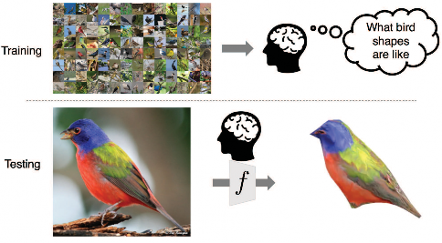
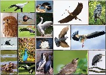
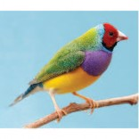
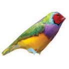
Figure 27.22 If you have seen many pictures of some category—say, birds (top)—you can
use them to produce a 3D reconstruction from a single new view (bottom). You need to be
sure that all objects have a fairly similar geometry (so a picture of an ostrich won’t help if
you’re looking at a sparrow), but classification methods can sort this out. From the many
images you can estimate how texture values in the image are distributed across the object,
and thus complete the texture for parts of the bird you haven’t seen yet (bottom). Figure
courtesy of Angjoo Kanazawa, produced by a system described in Kanazawa et al. (2018b).
Top photo credit: Satori/123RF; Bottom left credit: Four Oaks/Shutterstock.Image
transformationMaking pictures
It is now common to insert computer graphics models into photographs in a convincing fash-
ion, as in Figure 27.23, where a statue has been placed into a photo of a room. First estimate
a depth map and albedo for the picture. Then estimate the lighting in the image by matching
it to other images with known lighting. Place the object in the image’s depth map, and render
the resulting world with a physical rendering program—a standard tool in computer graphics.
Finally, blend the modified image with the original image.Neural networks can also be trained to do image transformation: mapping images from
type X—for example, a blurry image; an aerial image of a town; or a drawing of a new
product—to images of type Y—for example, a deblurred version of the image; a road map;
or a product photograph. This is easiest when the training data consists of (X, Y) pairs of
images—in Figure 27.24 each example pair has an aerial image and the corresponding road
map section. The training loss compares the output of the network with the desired output,
and also has a loss component from a generative adversarial network (GAN) that ensures that
the output has the right kinds of features for images of type Y. As we see in the test portion
of Figure 27.24, systems of this kind perform very well.Sometimes we don’t have images that are paired with each other, but we do have a big
collection of images of type X (say, pictures of horses) and a separate collection of type YSection 27.7 Using Computer Vision 1021
Figure 27.23 On the left, an image of a real scene. On the right, a computer graphics object
has been inserted into the scene. You can see that the light appears to be coming from the
right direction, and that the object seems to cast appropriate shadows. The generated image
is convincing even if there are small errors in the lighting and shadows, because people are
not expert at identifying these errors. Figure courtesy of Kevin Karsch, produced by a system
described in Karsch et al. (2011).Training Test
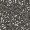
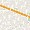
Training data
,
,
Objective
Input
Result
xi … yi
i
y^
xi
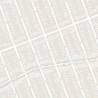
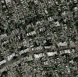
y^ Y
i
yi
X
xi
regression error
Figure 27.24 Paired image translation where the input consists of aerial images and the
corresponding map tiles, and the goal is to train a network to produce a map tile from an
aerial image. (The system can also learn to generate aerial images from map tiles.) The
network is trained by comparing yˆi (the output for example xi of type X ) to the right output yi
of type Y . Then at test time, the network must make new images of type Y from new inputs
of type X . Figure courtesy of Phillip Isola, Jun-Yan Zhu and Alexei A. Efros, produced by a
system described in Isola et al. (2017). Map data © 2019 Google.(say, pictures of zebras). Imagine an artist who is tasked with creating an image of a zebra
running in a field. The artist would appreciate being able to select just the right image of
a horse, and then having the computer automatically transform the horse into a zebra (Fig-
ure 27.25). To achieve this we can train two transformation networks, with an additional
constraint called a cycle constraint. The first network maps horses to zebras; the second net-
work maps zebras to horses; and the cycle constraint requires that when you map X to Y to1022 Chapter 27 Computer Vision
Training Test
Training data
Objective
Input
Result
yˆi
xi
Y
yˆi
X xi
xˆi
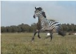
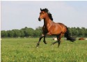
…
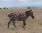
…
,
X Y cycle-consistency error
Figure 27.25 Unpaired image translation: given two populations of images (here type X is
horses and type Y is zebras), but no corresponding pairs, learn to translate a horse into a
zebra. The method trains two predictors: one that maps type X to type Y, and another that
maps type Y to type X. If the first network maps a horse xi to a zebra yˆi, the second network
should map yˆi back to the original xi. The difference between xi and xˆi is what trains the two
networks. The cycle from Y to X and back must be closed. Such networks can successfully
impose rich transformations on images. Figure courtesy of Alexei A. Efros; see Zhu et al.
(2017). Running horse photo by Justyna Furmanczyk Gibaszek/Shutterstock.Style transfer
Deepfake
X (or Y to X to Y), you get what you started with. Again, GAN losses ensure that the horse
(or zebra) pictures that the networks output are “like” real horse (or zebra) pictures.Another artistic effect is called style transfer: the input consists of two images—the
content (for example, a photograph of a cat); and the style (for example, an abstract painting).
The output is a version of the cat rendered in the abstract style (see Figure 27.26). The key
insight to solving this problem is that if we examine a deep convolutional neural network
(CNN) that has been trained to do object recognition (say, on ImageNet), we find that the
early layers tend to represent the style of a picture, and the late layers represent the content.
Let p be the content image and s be the style image, and let E(x) be the vector of activations
of an early layer on image x and L(x) be the vector of activations of a late layer on image| — |
| — |
x. Then we want to generate some image x that has similar content to the house photo,
that is, minimizes L(x) L(p) , and also has similar style to the impressionist painting, that
is, minimizes E(x) E(s) . We use gradient descent with a loss function that is a linear
combination of these two factors to find an image x that minimizes the loss.Generative adversarial networks (GANs) can create novel photorealistic images, fooling
most people most of the time. One kind of image is the deepfake—an image or video that
looks like a particular person, but is generated from a model. For example, when Carrie Fisher
was 60, a generated replica of her 19-year-old face was superimposed on another actor’s body
for the making of Rogue One. The movie industry creates ever-better deepfakes for artistic
purposes, and researchers work on countermeasures for detecting deepfakes, to mitigate the
destructive effects of fake news.Generated images can also be used to maintain privacy. For example, there are image
data sets in radiological practices that would be useful for researchers, but can’t be published
because of patient confidentiality. Generative image models can take a private data set of
images and produce a synthetic data set that can be shared with researchers. This data set
should be (a) like the training data set; (b) different; and (c) controllable. Consider chest
X-rays. The synthetic data set should be like the training data set in the sense that each image
individually would fool a radiologist and the frequencies of each effect should be right, soSection 27.7 Using Computer Vision 1023
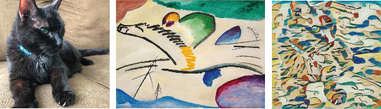
Figure 27.26 Style transfer: The content of a photo of a cat is combined with the style of an
abstract painting to yield a new image of the cat rendered in the abstract style (right). The
painting is Wassily Kandinsky’s Lyrisches or The Lyrical (public domain); the cat is Cosmo.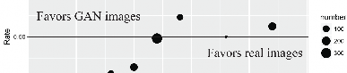
Figure 27.27 GAN generated images of lung X-rays. On the left, a pair consisting of a real
X-ray and a GAN-generated X-ray. On the right, results of a test asking radiologists, given
a pair of X-rays as seen on the left, to tell which is the real X-ray. On average, they chose
correctly 61% of the time, somewhat better than chance. But they differed in their accuracy—
the chart on the right shows the error rate for 12 different radiologists; one of them had an
error rate near 0% and another had 80% errors. The size of each dot indicates the number
of images each radiologist viewed. Figure courtesy of Alex Schwing, produced by a system
described in Deshpande et al. (2019).a radiologist would not be surprised by how often (say) pneumonia appears. The new data
set should be different, in the sense that it does not reveal personally identifiable information.
The new data set should be controllable, so that the frequencies of effects can be adjusted
to reflect the communities of interest. For example, pneumonias are more common in the
elderly than in young adults. Each of these goals is technically difficult to reach, but image
data sets have been created that fool practicing radiologists some of the time (Figure 27.27).1024 Chapter 27 Computer Vision
Controlling movement with vision